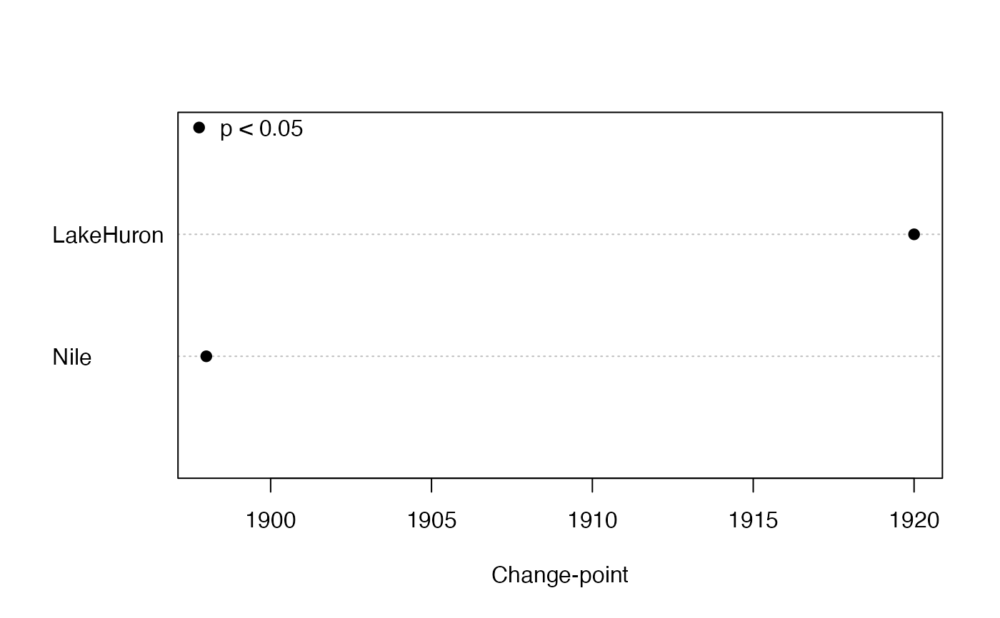

Locates a single change-point in an annual series based on the Pettitt test.
pett(x, plot = FALSE, order = FALSE, pval = 0.05, pchs = c(19, 21), ...)a numeric vector, matrix or data frame with no missing interior values
Should the trends be plotted when x is a matrix?
Should the plotted trends be ordered by size?
p-value for significance
Plot symbols for significant and not significant trend estimates, respectively
Other arguments to pass to plotting function
A list of the following if x is a vector:
Pettitt's statistic
significance probability for statistic
last position preceding change to new level
if available, time of change.point position
median of all differences between points after and up to change.point
or a matrix with corresponding columns if x
is a matrix or data frame.
Pettitt's (1979) method is a rank-based nonparametric test for abrupt changes in a time series. It uses the Mann-Whitney statistic for testing that two samples (before and after the change-point) come from the same distribution, choosing the change-point that maximizes the statistic. The p-value is approximate but accurate to 0.01 for \(p \le\) 0.5. Serial correlation is ignored, so the interval between points should be long enough to avoid strong serial correlation. The size of the change is estimated as the median difference between all pairs of observations in which the first one is after the change-point and the second is up to the change-point.
Missing values are allowed at the beginning or end of each variable but interior missing values will produce an NA. Otherwise the change-point might not be meaningful.
If plot = TRUE, a dot plot of change.times is shown. If
sort = TRUE, the dots are sorted by change.time. The plot
symbols indicate, respectively, that the trend is significant or not
significant. The plot can be customized by passing any arguments used by
dotchart such as xlab, as well as graphical parameters
described in par.
The change.point returned by these functions is the last
position before the series actually changes, for consistency with the
original Pettitt test. But for reporting purposes, the following position
might be more appropriate to call the “change-point”.
The Pettitt test produces a supposed change-point, even when the trend is smooth, or when the abrupt change is smaller than the long-term smooth change. Remove any smooth, long-term trend before applying this test.
Pettitt, A. N. (1979) A non-parametric approach to the change-point problem. Journal of the Royal Statistical Society. Series C (Applied Statistics) 28(2), 126--135.
# data from Pettitt (1979, Table 1):
y <- c(-1.05, 0.96, 1.22, 0.58, -0.98, -0.03, -1.54, -0.71, -0.35, 0.66,
0.44, 0.91, -0.02, -1.42, 1.26, -1.02, -0.81, 1.66, 1.05, 0.97, 2.14, 1.22,
-0.24, 1.60, 0.72, -0.12, 0.44, 0.03, 0.66, 0.56, 1.37, 1.66, 0.10, 0.80,
1.29, 0.49, -0.07, 1.18, 3.29, 1.84)
pett(y) # K=232, p=0.0146, change-point=17, the same results as Pettitt
#> $pettitt.K
#> [1] 232
#>
#> $p.value
#> [1] 0.0146
#>
#> $change.point
#> [1] 17
#>
#> $change.time
#> [1] 17
#>
#> $change.size
#> [1] 1.07
#>
# identify the year of a change-point in an annual time series:
pett(Nile)
#> $pettitt.K
#> [1] 1617
#>
#> $p.value
#> [1] 3.59e-07
#>
#> $change.point
#> [1] 28
#>
#> $change.time
#> [1] 1898
#>
#> $change.size
#> [1] -260
#>
# apply to a matrix time series:
y <- ts.intersect(Nile, LakeHuron)
pett(y)
#> pettitt.K p.value change.point change.time change.size
#> Nile 1362 7.83e-06 24 1898 -255.50
#> LakeHuron 1532 2.88e-07 46 1920 -1.54
pett(y, plot = TRUE, xlab = "Change-point")
legend("topleft", legend = "p < 0.05", pch = 19, bty="n")

# note how a smooth trend can disguise a change-point:
# smooth trend with change-point at 75
y <- 1:100 + c(rep(0, 75), rep(10, 25))
pett(y) # gives 50, erroneously
#> $pettitt.K
#> [1] 2500
#>
#> $p.value
#> [1] 1.5e-16
#>
#> $change.point
#> [1] 50
#>
#> $change.time
#> [1] 50
#>
#> $change.size
#> [1] 55
#>
pett(residuals(lm(y~I(1:100)))) # removing trend gives 75, correctly
#> $pettitt.K
#> [1] 1743
#>
#> $p.value
#> [1] 2.9e-08
#>
#> $change.point
#> [1] 75
#>
#> $change.time
#> [1] 75
#>
#> $change.size
#> [1] 4.374437
#>